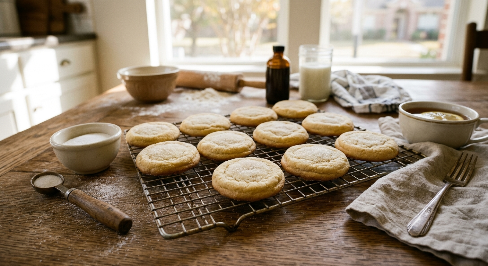

Classic Cut-Out Sugar Cookies

These sugar cookies are buttery, tender and sturdy enough to hold sharp edges when cut. They are a good base for holiday cookie decorating, with a simple vanilla flavor that goes with any icing.
The dough needs about an hour of chilling, so plan ahead.
Ingredients
- 3 cups all-purpose flour
- 1 tsp baking powder
- 1/2 tsp salt
- 1 cup (2 sticks) unsalted butter, softened
- 1 cup granulated sugar
- 1 large egg
- 2 tsp vanilla extract
Instructions
- Whisk the flour, baking powder and salt together.
- Beat the butter and sugar until light and fluffy, about 2 minutes. Beat in the egg and vanilla.
- Add the dry ingredients and mix until a soft dough forms. Divide in half, flatten into disks, wrap and chill for at least 1 hour.
- Preheat the oven to 350°F (175°C) and line baking sheets with parchment.
- Roll the dough to about 1/4 inch thick on a floured surface, cut shapes and place them 1 inch apart.
- Bake for 8 to 10 minutes, until the edges are just beginning to turn golden. Cool on the pan for 5 minutes, then on a rack. Decorate when completely cool.
Ingredient Notes and Substitutions
Butter
It should be softened but still cool. If it is too warm the cookies spread.
Flour
Spoon and level the flour. Too much makes dry cookies.
Tips for Success
- Chill the dough, and re-chill the cut shapes for 10 minutes if they soften.
- Roll evenly for even baking.
- Do not overbake. Pale cookies stay soft.
Variations
- Add 1 tsp almond extract or lemon zest.
- Top with royal icing or a simple powdered sugar glaze.
Storage and Make-Ahead
Store undecorated cookies in an airtight container for up to 5 days. The dough keeps in the refrigerator for 3 days or in the freezer for 3 months.
Frequently Asked Questions
Why did my cookies spread?
Warm butter or insufficient chilling. Chill the dough and the cut shapes.
Can I freeze baked cookies?
Yes, undecorated, for up to 3 months.
How many does it make?
About 30 with a 3-inch cutter, depending on size.